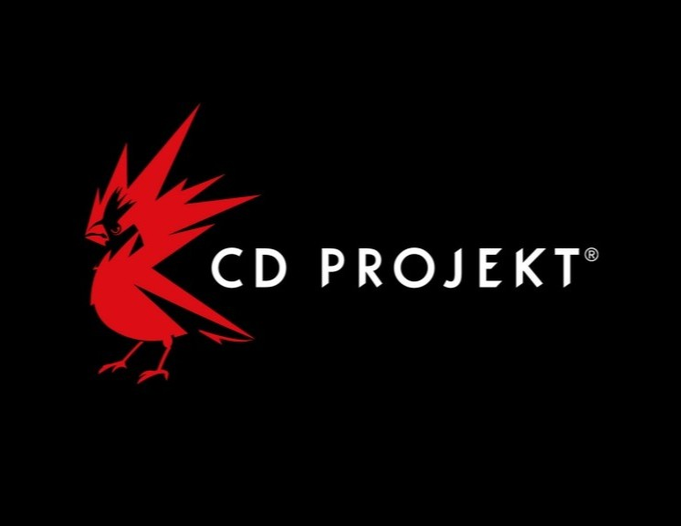
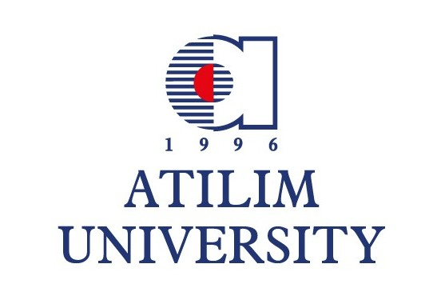
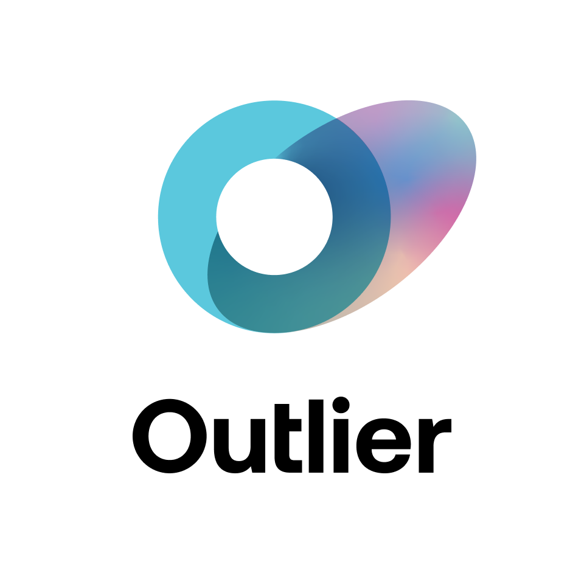
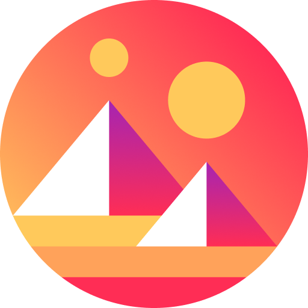

Background
Education

CD Projekt RED x Futuregames
Game Design
Warsaw, Poland
Game Development & Game Design training with a specialization in Level Design, focused on player flow, encounter design, and building readable, engaging spaces.

Atılım University
Computer Engineering
Ankara, Turkey
Strong engineering foundation in software development, algorithms, and problem-solving, supporting robust design decisions and technical collaboration.
Experience

Outlier
Software Engineer
Remote
Ertürkler A.Ş.
Software Engineer
Istanbul, Turkey

Decentraland Foundation
Game Developer
Remote
Dias Teknoloji
Computer Engineer
Istanbul, Turkey
DNS İnovasyon Sistemleri ve Teknoloji A.Ş.
Computer Engineer
Istanbul, Turkey
Infopark Yazılım ve Danışmanlık
Software Engineer
Ankara, Turkey